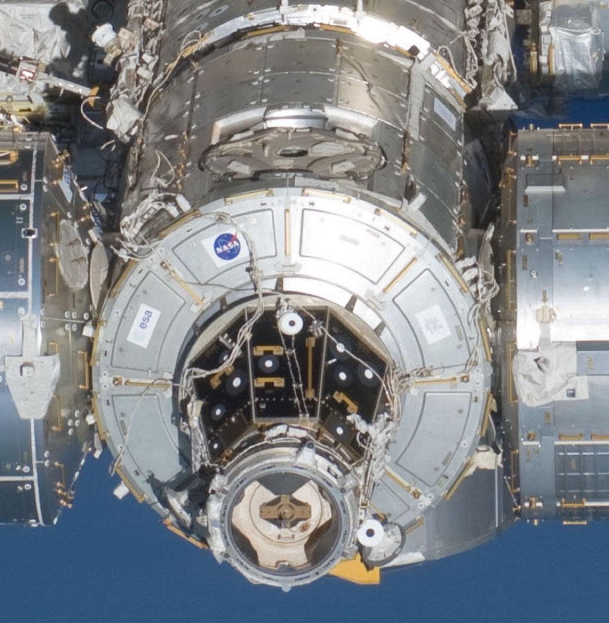

Node Module
A pressurized hub with multiple docking ports — the structural connector that lets a station branch.

101 · zoom in
A node is a special kind of pressurized module: it doesn't host experiments or crew quarters, it just connects other modules together. Picture a hexagonal box where each face has a docking port. Bolt one node to a launching rocket, send it up, then dock five more modules to the five remaining ports and you've grown your station from one module into six.
The ISS has three: Unity (Node 1), Harmony (Node 2), and Tranquility (Node 3). Each one is the central junction for one segment of the station — Unity glues the Russian and US sides together; Harmony connects the US lab cluster to the Japanese and European modules; Tranquility carries the Cupola observation dome.
Tiangong took a different approach: instead of dedicated nodes, the central Tianhe module acts as both living quarters and a hub, with multiple docking ports built directly into its forward and aft ends. It's a tighter design that costs less mass to launch but limits how many modules can branch off.
Nodes are connector modules — pressurized hubs with multiple Common Berthing Mechanism (CBM) or docking ports — that allow a station to branch into a tree topology rather than a linear chain.
ISS Unity (Node 1) launched in 1998 on STS-88. Six CBM ports: forward to Destiny, aft to Zarya, port to BEAM (was Tranquility), starboard to Quest, zenith to Z1 truss, nadir to Leonardo PMM. The first US-built ISS module.
ISS Harmony (Node 2) launched 2007. Six ports: connects Destiny to Columbus (port), Kibo (starboard), and the docking adaptor for visiting vehicles (forward).
ISS Tranquility (Node 3) launched 2010. Hosts the Cupola observation dome (nadir port), the Permanent Multipurpose Module Leonardo (forward), and BEAM (aft).
Tiangong's Tianhe core: combines node + crew quarters + propulsion + control. Forward docking hub has 4 CBM-equivalent ports plus an aft docking port for cargo (Tianzhou) and crewed (Shenzhou) spacecraft. Wentian and Mengtian dock laterally via the forward node hub.
